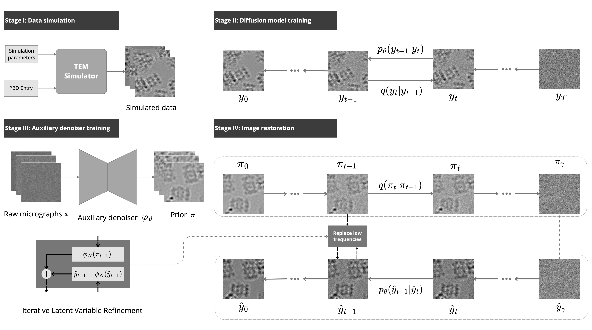

Proposed methods

MultiNoise2Noise Description

ShrödParticle description

Cryogenic electron microscopy (CryoEM) is a groundbreaking imaging technique for macromolecules, allowing 3D reconstructions of their structures to be obtained with near-atomic accuracy. It involves rapidly freezing samples with the preparation under study and then making a series of films using a transmission electron microscope (TEM), thus obtaining micrographs containing different projections of the proteins under study. Complex computer algorithms then create a 3D reconstruction based on these. Unfortunately, despite great success, the technique is not free of problems. The biggest of these is the very low signal-to-noise-ratio (SNR), which can be as low as 0.1. While current methods allow for contrast enhancement on micrographs, they are significantly limited by their deterministic nature, the lack of effective use of image sequence information and the inability to chunk the signal at higher frequencies. The aim of our project was to propose new methods for denoising micrographs with CryoEM that are able to address the above problems.
We selected three challenging CryoEM datasets from the EMPIAR database: EMPIAR-10297, which contains DPS from Escherichia Coli (Naydenova et al. 2019); EMPIAR-10474, which contains Human Light-Chain Apoferritin (Guo et al. 2020); and EMPIAR-10025, which contains Thermoplasma Acidophilum 20S Proteasome (Campbell et al. 2015). Each of these datasets was acquired using different microscopes and has different imaging parameters.